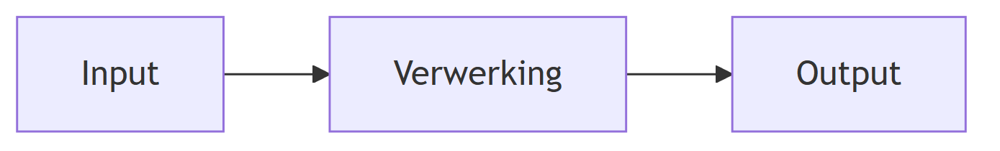

Thinking Set 2 Looptest Challenge
CT-domein Abstractie CT-proces Formulating the Problem
Waar werk je aan?
In deze Thinking Set werk je aan de volgende leerdoelen:
- Ik kan analyseren welke informatie relevant is voor het probleem.
- Ik kan een complexe situatie vereenvoudigen tot de essentiële kenmerken.
- Ik kan de relevante informatie representeren in een abstract model.
- Ik kan het algemene concept achter de gekozen representatie verwoorden.
De challenge
Forrest rent een uitzonderlijke afstand, maar de film laat niet zien hoe deze prestatie objectief kan worden beschreven of vergeleken.
Mensen moeten prestaties uit de werkelijkheid kunnen omzetten naar objectieve informatie, zodat deze gemeten, vergeleken en geïnterpreteerd kunnen worden.
Hoe ontwerp je een informatiemodel waarmee een loopprestatie kan worden vastgelegd, berekend en overzichtelijk gepresenteerd?
Maak je denken zichtbaar
Werk jullie oplossing uit als een IPO-diagram.
Een IPO-diagram maakt zichtbaar welke informatie een systeem ontvangt, hoe deze informatie wordt verwerkt en welke informatie het systeem oplevert.

Understanding
Test jullie oplossing
Geef jullie IPO-diagram aan een andere groep.
Laat hen met jullie informatiemodel dezelfde loopprestatie vastleggen en de resultaten bepalen.
Kunnen zij met jullie informatiemodel dezelfde loopprestatie vastleggen en tot dezelfde resultaten komen?